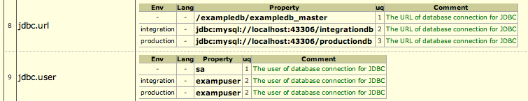
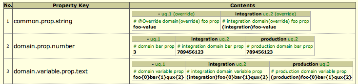
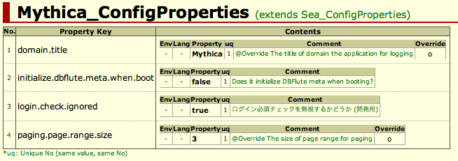

PropertiesHTML
${indexlist}PropertiesHTMLとは？
Javaでよく利用される ".properties" ファイルを、環境や言語を横断的に比較しながら 閲覧できるドキュメントです。 DBとは直接関係ありませんが、DBの接続情報などの環境ごとの管理に困る現場も多いため、少し手を延ばしてDBFluteでサポートしています。
Propertiesのトラブル
Propertiesファイルで設定やメッセージを管理する際の一番の悩みは、環境や言語ごとに分離されたファイルの内容の食い違いです。 主に以下のようなトラブルをよく見かけます。
- ローカル環境用と本番用でプロパティの数が違って本番でエラー
- メッセージリソースにおいて、デフォルト(英語)の言語でプロパティが足りてなくてエラー
- 本番に結合テスト用の値が設定されてて(結合用からコピーしたから...)、本番でおかしな動き
どんなに気をつけていてもなかなかなくなりません。いや、他にもやることがたくさんあって、じっくり気をつけてる暇がないということもあるでしょう。 また、プロパティの追加や変更が一つや二つとは限りませんから。(非常に多くのプロパティが一気に追加や変更されることも)
Propertiesの問題点
ずばり、環境や言語ごとにファイルが分離してしまい、横断チェックが大変なこと。
よほど綺麗にプロパティ定義を整理していないと目視チェックはやりづらいですし、 また、プロパティ値はそれぞれ変わるのでDIFFツールでのチェックもしづらいもの。
PropertiesHTMLで解決
やはり、キーだけの差分を知りたい。そして、一つ一つのキーごとに環境や言語ごとに分かれたプロパティ値を並べて確認したい。 つまり、Javaの ".properties" に特化したDIFFツール、閲覧ツールが欲しい。 これを実現したのが PropertiesHTML です。@since 1.0.1
以下は、sea_env.propertiesという名前の環境系設定ファイルを、開発環境と結合テストと本番のものを比較したものです。 ファイル名が太字の開発環境のものを基準とし、それに対して多いプロパティ(Over Key)と少ないプロパティ(Short Key)が表示され、食い違いが一目瞭然です。
PropertiesHtmlのDIFF部分の例

そして以下は、同じくsea_env.propertiesの "JDBC接続のURL" と "DBユーザー名" のプロパティにおける、環境ごとに横断的なVIEW部分の例です。開発環境と結合テストと本番でどのようなプロパティ値が定義されているかが一目瞭然です。
PropertiesHtmlのView部分の例 
{kind=link}
リリース事故防止のために
特に本番用の ".properties" は、本番でしかテストができません。 たかだか設定ファイル、メッセージリソースと思っても、プログラムよりもテストがしづらく、本番でのトラブルに直結するものであると忘れてはいけません。 差異がないよう設定ミスがないよう頑張って目視のチェックは必要ですが、PropertiesHtmlがそれを支援するツールとなればと。
PropertiesHTMLの見方
大きく二つのパートに分かれています。まず一つ目はファイル同士のプロパティの比較の一覧、そして二つ目はそれぞれのプロパティで
- Diffパート
- ファイル同士のプロパティの比較の一覧
- Viewパート
- それぞれのプロパティごとの横断的一覧
DIFFパート
PropertiesHtmlのDIFFパートの例
リクエストごとに、(ファイル名が太字の)ルートファイルと環境(Env)ごと言語(Lang)ごとのファイル(File)の一覧で、 重複キー(Duplicate Key)、基準から比べて多いキー(Over Key)と少ないキー(Short Key)が表示されます。
デフォルトの環境、デフォルトの言語は、小さな小さなハイフン "-" で表示されます。 明示的に dfprop にて指定された環境は環境名が表示され、言語は ja や fr など Properties のファイル名から取得された名前が表示されます。
Duplicate Key
Duplicate Key は、ファイル内に同じ名前のキーが二つ以上あった場合にそのキーが表示されます。 一つのファイル内にキーが重複してうれしいことはまずないので、表示されたらチェックが必要です。
Over Key, Short Key
Over Key と Short Key は、環境や言語ごとのプロパティの有無の差分です。 プロパティのキー構成に食い違いが発生しているというのは、通常は良い状態とは言えないので、表示されたらチェックが必要です。 ただ、オーバーライドや継承していることで、(アプリケーションとしては正常な状態でも)差が出てくる可能性はあります。 その場合は、赤字ではなく黒字でキーが表示され(@since 1.0.3)、かつ、緑色で(override)や(extends)などのマークが一緒に表示されます。 なので、赤字のものが要チェックです。
VIEWパート
リクエストごとに、それぞれのプロパティのキー(Property Key)に該当する環境(Env)ごと言語(Lang)ごとのプロパティ値(Property)が一覧で表示されます。 環境や言語の表現方法はDIFFパートと同じです。
uq: ユニークNo
"uq" は、ユニークNoと呼び、分かれたファイル間でプロパティ値が同じものを探すのに役に立ちます。 同じ番号であれば同じ値であると言えます。プロパティ値を見ればわかる話でもありますが、長く複雑な値の場合などは目視で確認するのも大変です。 このユニークNoでどことどこが同じ値なのかがすぐにわかります。
プロパティコメント
プロパティ定義の直上の行コメント(#始まり)に書いたコメント(Comment)が一緒に表示されます。
e.g. プロパティにコメントを付けてわかりやすくする @properties
# the URL of JDBC connection to main schema
jdbc.url = jdbc:mysql://localhost:3306/integrationdb
コメントを積極的に付けることで、Propertiesファイル上でもPropertiesHTMLでもわかりやすくなります。 メッセージリソース系はあまり付ける感じにはなりませんが、コンフィグ系のPropertiesではとても有効なので、何の設定なのかを説明するコメントを書いていくと良いでしょう。
また、この行コメントの中で、制御用のアノテーションを付与することもできます。 マスクしたいプロパティに関しては @Secure アノテーション、オーバーライドの明示は @Override アノテーション、コメントにもなりつつ Properties の整合性のチェックにもつながります。
PropertiesHTMLの作り方
dfpropの設定
PropertiesHTMLは、Docタスクで自動生成されます。DBFluteが何の ".properties" ファイルを元に自動生成するのかを知る必要があるので、documentDefinitionMap.dfprop の propertiesHtmlMap を設定します。
e.g. sea_env.properties の PropertiesHtml を生成 @documentDefinitionMap.dfprop
; propertiesHtmlMap = map:{
; Sea_EnvProperties = map:{
; baseDir = ../src
; rootFile = $$baseDir$$/main/resources/sea_env.properties
; environmentMap = map:{
; integration = $$baseDir$$/integration/resources
; production = $$baseDir$$/production/resources
}
}
}
- リクエスト名
- Sea_EnvProperties (ドキュメント上のタイトル)
- ルートファイル
- $$baseDir$$/main/resources/sea_env.properties
- 環境情報
- integration, production (それぞれディレクトリを指定)
これでDocタスクを実行すれば、設定されたリクエスト通りにPropertiesHTMLが [DBFluteクライアント]/output/doc/properties-[client-project].html に自動生成されます。
環境の設定
environmentMap で、それぞれの環境のディレクトリを指定することで、環境ごとに比較されます。 src/main/reousrcesのsea_env.propertiesをルートファイルとして、integrationとproduction配下の同じ名前の ".properties" ファイルが比較対象となります。
環境ごとに分かれない場合は、environmentMap を省略します。
言語の設定 (自動判別)
また、ルートファイルや環境ファイルと同じディレクトリの sea_env_ja.properties という形式で言語ごとのファイルが自動判別され、言語ごとにも比較されます。 また、ルートファイルが特定の言語でも構いません。一番、頻繁にメンテナンスされる言語のファイルをルートにすると良いでしょう。
baseDir
baseDirは、単にパス指定の設定の中で同じ部分を再利用できるようにするための任意の設定で、$$baseDir$$ という形式で参照できます。パス指定は "DBFluteクライアントからの相対パス" となるため、別のプロジェクトのディレクトリを指定するとだいぶ長くなるので、そういうときに有効です。
無視したい差分があれば
アプリケーションの構造上、このプロパティは(正当な理由で)どうしても差分となる、というようなプロパティがある場合は、 そのプロパティを dfprop の diffIgnoredKeyList に指定すると、DIFFパートで差分になりません。
マスクしたいプロパティがあれば
例えば、本番DBへの接続パスワードなど、ドキュメント上に気軽に表示されては困るようなプロパティは、 dfprop にて maskedKeyList で指定しておくと PropertiesHTML 上の表示が *** になります。
また、dfpropに指定しなくても、プロパティ定義の直上の行コメント(#始まり)に、@Secure を付けておくと(行コメントの中のどこでもOK)、そのプロパティはマスクされます(@since 1.0.2)。
e.g. セキュリティ情報のプロパティには @Secure を付ける @properties
# @Secure the password of JDBC connection to main database
jdbc.password = foo
こちらのやり方がどうしてもできないような場合にだけ(コメントすらいじれないような状況など)、dfpropでの指定を利用すると良いでしょう。
もちろん、ドキュメント上で値が確認できないので、これらプロパティだけは直接ファイルを開いて目視確認となります。 また、ユニークNoの判定も正しく行われないので、他の環境と同じ値なのかどうかすらドキュメント上ではわからなくなります。
環境だけで横並び比較
通常、環境で分かれるときは環境だけ、言語で分かれるときは言語だけ、二つの要素が入り交じって分かれることはあまりありません。 PropertiesHTMLとしては、入り交じっても大丈夫のように作られていて、 そのためVIEWパートでは(分割ファイルがいくら増えてもいいように)縦に並べて比較できるようにしています。
もし環境だけというのが確定していて、かつ、開発者の画面(ディスプレイ)が横に広い場合は、横並びにして表示することも可能です。 dfprop にて isEnvOnlyFloatLeft を true に設定すると、そのリクエストの Properties は、言語欄が省略され、横並び表示になります。@since 1.0.3
PropertiesHtmlの環境のみ横並びした場合の例 
{kind=link}
表示される情報量は同じです。ユニークNoやOverrideのマークは、環境名の横に小さく表示されます。 環境が二つか三つくらいと少ない場合に有効です。
継承するやり方
継承する Properties を指定することもできます。当然、アプリ実行時に Properties の継承が成り立っていないと意味がありませんが、そういった仕組みが既に存在する場合は、 それに合わせたドキュメントにすることができます。
二つのファイルに対応するリクエストをそれぞれ設定して、子Propertiesになる方で extendsPropRequest に親Propertiesのリクエスト名を指定します。すると、継承していることを示すマークがドキュメントに付与され、 さらに、それぞれのプロパティでオーバーライドしたものかどうかのマークが付きます。
e.g. Sea_ConfigPropertiesを継承 @documentDefinitionMap.dfprop
; propertiesHtmlMap = map:{
; Mythica_ConfigProperties = map:{
...
; extendsPropRequest = Sea_ConfigProperties
}
}
以下は、mythica_config.propertiesというファイルが、sea_config.propertiesというファイルを継承した場合の例です。 domain.title と paging.page.range.size というプロパティをオーバーライドしてることがわかります。
PropertiesHtmlのExtendsした場合の例 
{kind=link}
暗黙のオーバーライドを阻止
階層構造になると、キー名のバッティングで予期せぬ上書き(オーバーライド)で予期せぬトラブルも発生する可能性があります。 上書き自体はやりたいことではありますが、それが不意に発生するとデバッグも大変です。何をオーバーライドしてるのかが PropertiesHTML で把握できれば少しでもトラブル防止につながるはずです。
一方で、そのいわゆる "暗黙のオーバーライド" を事前に検知できたら一番安心です。 アプリケーションにおける Properties の継承の仕組み次第にそれがあればいいですが、もしない場合は PropertiesHTML の生成時にそれをチェックすることができます。@since 1.0.3
dfprop にて isCheckImplicitOverride を true にすると、暗黙のオーバーライドがあるとDocタスクでPropertiesHTMLを生成する途中でエラーとなります。
e.g. 暗黙のオーバーライドをチェックするモード @documentDefinitionMap.dfprop
; propertiesHtmlMap = map:{
; Mythica_ConfigProperties = map:{
...
; extendsPropRequest = Sea_ConfigProperties
; isCheckImplicitOverride = true
}
}
オーバーライドを明示するためには、プロパティ定義の直上の行コメント(#始まり)の中で @Override を指定します(コメントの中のどこでもOK)。すると、PropertiesHTMLが正常に生成できます。 また、@Override が付いてるのに、オーバーライドになっていない場合も同じくエラーとして検知されます。
e.g. オーバーライドしてることを明示するために @Override を付ける @properties
# @Override the size of page range for DBFlute PagingResultBean
paging.page.range.size = 3
Propertiesファイルの中でも、何がオーバーライドで何がそうでないものかが一目瞭然となるため、継承する場合はこの方式でオーバーライドを管理することが推奨されます。
Propertiesの悩みの一つ
Propertiesを使った場合の大きな悩みの一つが、ほとんど同じでちょっと違うだけの似たような Properties がそれぞれのアプリケーションでたくさん作られてしまうことです。 できれば、共通部分は共通プロジェクトで管理して、アプリケーションはそれを参照して、固有のものだけを定義するという形にしたいです。
そういった仕組み自体は、色々なところで提供されています。DBFluteでも、Runtimeの中に ObjectiveProperties というクラスがあり、複数のPropertiesを継承モデルにして一つのPropertiesのように扱うことができます。 Strutsのメッセージリソースにおいても、dbflute-sastruts-example にて ObjectiveMessageResources (こちらは単なるExampleのクラス)というクラスで共通メッセージを別のPropertiesで管理できるようにしています。
しかしながら、階層構造になると、キー名のバッティングで予期せぬ上書き(オーバーライド)で予期せぬトラブルも発生する可能性があります。 上書き自体はやりたいことではありますが、それが不意に発生するとデバッグも大変です。何をオーバーライドしてるのかが PropertiesHTML で把握できれば少しでもトラブル防止につながりますし、チェックを入れてしまえばDocタスクの時点で判明します。
一方で、先ほど紹介した ObjectiveProperties では、プロパティ定義の直上の行コメント(#始まり)の中で @Override アノテーションを付けないとオーバーライドできないというチェックモードが存在します。PropertiesHTMLでやっているチェックと同じです。 実は PropertiesHTML の内部処理で ObjectiveProperties を使っているのです。 このクラスは Runtime なのでアプリでも利用できます。実際に dbflute-sastruts-example にて、コンフィグの仕組みとして利用しています。
Docタスクに含まれてるのはなぜ？
PropertiesHTMLを生成する専用のタスクではなく、Docタスクに紛れているのはなぜでしょう？
Propertiesって、本番に直結する重要なファイルでありながらも、あまり高い意識を置くものでもないように思えます。 なので、"Propertiesを修正したからPropertiesHTMLを生成しよう" という運用がディベロッパー全員でしっかりと行われるとはなかなか考えにくいです。
HistoryHTMLも同じようなコンセプトがありますが、DBFluteの日常業務(DB変更して自動生成)の一環として、 気付いたらドキュメントができてて必要になったら見る、というくらいが実際の現場にフィットすると考え、Docタスクの一環として含めているのです。